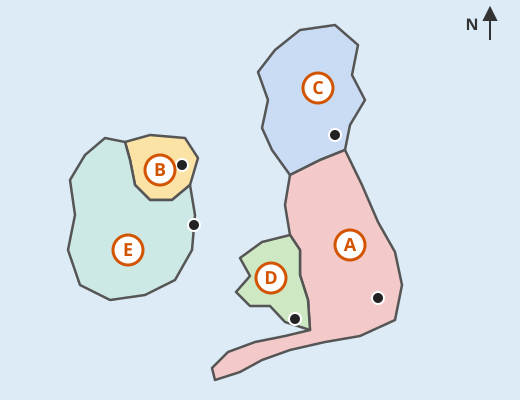
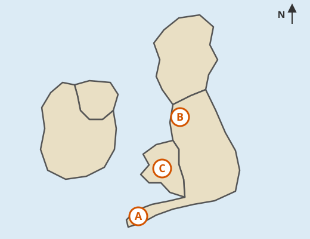

Selbsteinschätzung
Die Selbsteinschätzung braucht JavaScript. Die Britischen Inseln
Mit dieser Selbsteinschätzung bekommst du mit 6 Aufgaben einen Überblick, was du schon kannst. Sie fragt jede Seite ab.
Die App sagt dir nicht bei jeder Aufgabe, ob sie stimmt. Erst am Ende siehst du für jede abgefragte Seite, ob du sie schon kannst. Was du leer lässt, zählt als nicht gekonnt.
Dein Ergebnis bleibt nur auf diesem Gerät. Ein neuer Start ersetzt es.
Seite 1 von 3
Aufgabe 1
Aufgabe 2
Schau auf die Karte mit den Buchstaben und wähle das richtige Wort.

Die Britischen Inseln mit Buchstaben (Schemakarte, nicht genau nach Maßstab). Norden ist oben.
Quelle: eigene Zeichnung. Lizenz: CC-BY-4.0.
Seite 2 von 3
Aufgabe 3
Aufgabe 4
Schau auf die Karte von Great Britain und wähle die richtige Richtung.

Great Britain mit drei Gebieten (Schemakarte, nicht genau nach Maßstab). Norden ist oben.
Quelle: eigene Zeichnung. Lizenz: CC-BY-4.0.
Seite 3 von 3
Aufgabe 5
Wähle die richtige Form.
Aufgabe 6
Schreibe den Satz auf Englisch.
Dein Ergebnis
Mit einem KI-Tutor weiterlernen
Ein KI-Tutor kann mit deinem Ergebnis die Seiten mit dir durchgehen, die noch nicht sitzen. Dein Klick gibt ihm das Ergebnis und deine Eingaben; sonst schickt die App nichts weg.
Du nutzt dein eigenes Konto beim Anbieter. Der Assistent ist kein Angebot von lernapps.net: lernapps liefert nur Inhalte und Aufgaben.